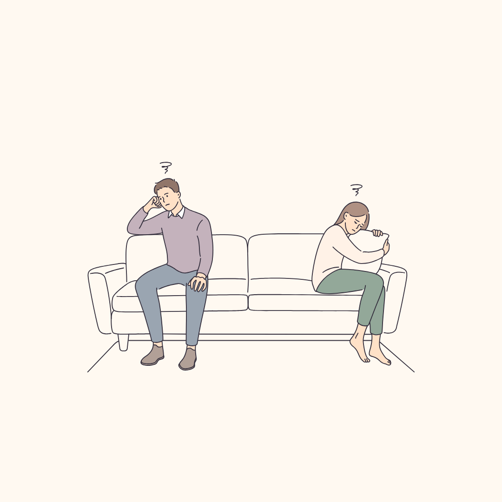

دليل صغير بيساعدك توقفي لحظة وتفهمي شو عم بصير معك وقت الخلاف، قبل ما تاخدك ردّة الفعل التلقائية.
مرشدة زوجية وعائلية. بترافق النساء والأزواج لبناء علاقات أكثر وعيًا، أمانًا ومودة.
يمكن بتفوتي على الحديث وإنتِ بس بدك توصّلي شغلة وجعتك…
وبعد دقائق بتلاقي حالك بتدافعي عن نفسك، بتعيدي نفس الكلام، أو بتسكتي وبتقولي: «خلص ما في فايدة».
غالبًا المشكلة مش بس بالموضوع اللي اختلفتوا عليه (الأولاد، المصاريف، التعامل مع الأهل…). مع الوقت ممكن تتكوّن بينكم دائرة بتشتغل تقريبًا بنفس الطريقة:
وفجأة، بدل ما تكونوا إنتو الاثنين أمام المشكلة، بتصيروا أمام بعض.
شو صار؟
اكتبي الموقف نفسه، بدون تفسير أو اتهام.
مثلاً: «حكيت معه عن موضوع بالبيت، ضل بالتلفون، وأنا رفعت صوتي».
كيف هاد الموقف خلاكي تشعري؟
مش بس «عصّبني». شو كان تحت العصبية؟
شو كنتِ فعلًا محتاجة؟
مثلاً: «كنت محتاجة أحس إنه معي بهاد الموضوع».
أحيانًا إحنا بنعبّر عن الوجع بالغضب، وبنستغرب ليش الطرف الثاني ما سمع الاحتياج اللي كان تحته.
اعملي هالتمرين بعد أكثر من خلاف. ممكن تلاحظي إنه رغم تغيّر المواضيع، نفس الشعور أو الاحتياج عم يرجع.
قبل ما يطلع الرد المعتاد، اسألي حالك للحظة: شو وجعني هلق؟ وشو بدي أوصّل فعلًا؟
وبدل ما تبدأي من اللي عمله غلط، جرّبي تبدأي من تجربتك:
❌ «كل الحمل عليّ وإنت مش فارق معك»
✓ «لما لقيت حالي عم بعمل كل إشي لحالي، حسيت إني شايلة الحمل وحدي. كنت محتاجة أحس إنك معي وبتشاركني»
مش المطلوب تحكي «الجملة الصح». المطلوب إنه اللي يوصل يكون أقرب لوجعك واحتياجك، مش بس لردّة فعلك.
إذا حسيتِ إنك عم تعيدي نفس الجملة للمرة الثالثة، أو صوتك عم يعلى، أو هو بلّش يدافع أو ينسحب… وقّفي محاولة الإقناع. ممكن تقولي:
«حاسّة إنا دخلنا بنفس الدائرة. خلينا نوقف شوي ونرجع نحكي لما نقدر نسمع بعض»
التوقف هون مش هروب من المشكلة. هو محاولة ما نخلي طريقة النقاش تصير مشكلة أكبر من الموضوع نفسه.

يمكن المشكلة مش إنك ما بتعرفي تحكي.
أحيانًا منعرف شو المفروض نقول، ومع هيك وقت الخلاف بنرجع لنفس ردود الفعل، لأنه تحت طريقة التواصل ممكن يكون في وجع متراكم، واحتياجات ما وصلت، ونمط خاص اتكوّن بينكم مع الوقت.
وقتها، يمكن الخطوة الجاية مش إنك تحاولي أكتر، وإنما تفهمي شو عم يحافظ على الدائرة.
في جلسة الاستشارة بنفهم مع بعض: وين بتبدأ الدائرة بينكم، شو بصير لكل طرف خلالها، ووين ممكن تكون أول نقطة نبدأ منها التغيير.
احجزي جلسة استشارةمش متأكدة إذا الجلسة مناسبة إلك؟ ابعتيلي رسالة ومنشوف سوا.
أو ادخلي على الموقع: ibtisamfamily.com
ملاحظة: إذا الخلاف فيه خوف، تهديد، عنف أو أذى، فالأولوية مش تحسين طريقة الحوار، وإنما الأمان والحصول على دعم مناسب.